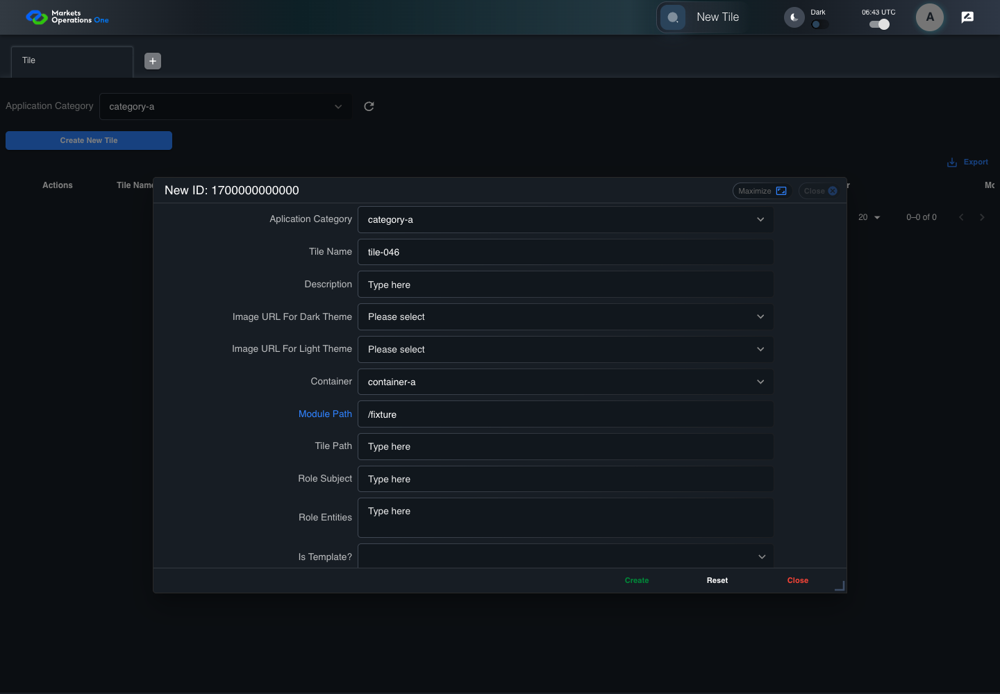
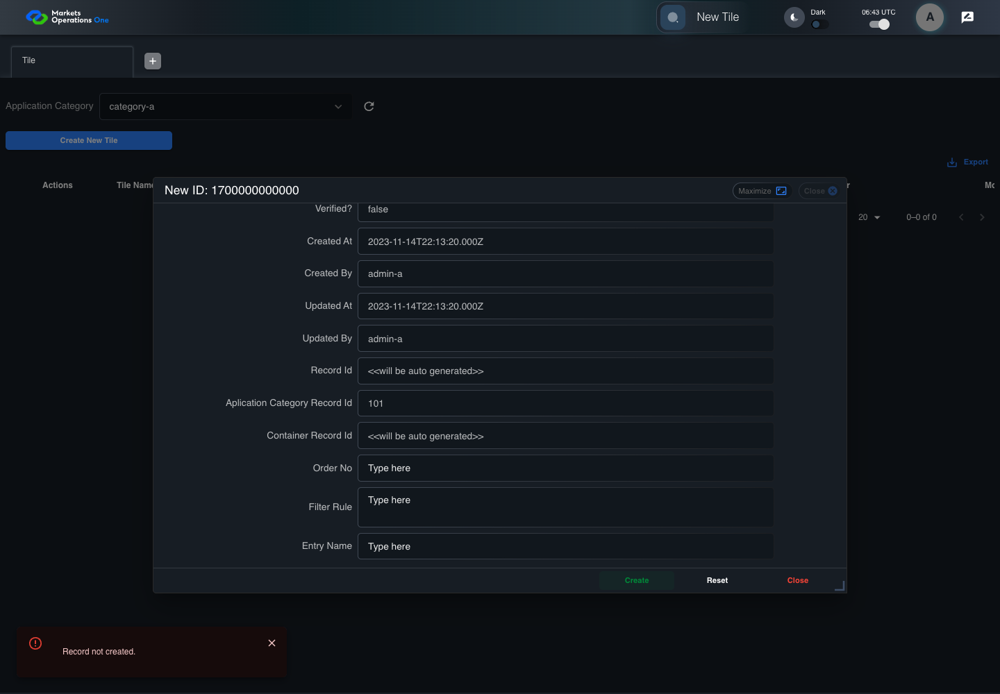

BFF-ADM-046 current BFF administration through actual UI
PASS · application/run-072/bff-adm-046-current-bff-administration-through-actual-ui-a9e0824d4ea5-attempt-1 · ACTUAL_APPLICATION_LOCAL_SERVICES
Actual current React and exact-current BFF admin controllers/services/JPA with actual migration DDL in disposable PostgreSQL. Controlled OUD/EMS2 identities and local Spring bootstrap. Fixture SQL seeds/mutates isolated records; service errors are actual database errors. Undefined agreed messages remain unresolved acceptance.
2026-10-22T06:43:40.408Z to 2026-10-22T06:43:48.605Z
Assertions and result · Artifact manifest · Exact run inputs and source hashes
Result SHA-256:6664909504726f66ca741680c4170b3f025ea431d2500fb3bb29583695493110Machine observations
- actual-identity-projection.json
d454b59662f998004d4d97d35b8c30781827191d478490a89c8325ec3b615ab7 - actual-migration-schema.json
ef3f0ac807ec723ad34078520a1d1880aa4fe191d4aa821de935768ab38723cc - baseline-inputs.json
f4754a4a36e66afcb0982aa972a68089367aec6e2ae3efc127b8943a7d65e348 - bff-boundary.json
66c00478835ddc761b9a0cef7c6eba4266f43ae286f79aa570ef515140419689 - committed-ui-submission-comparisons.json
a570bada1bbe56c06c37fe6a09a7ea787e3c1eca37e986706e1e349dbe977897 - creation-clock.json
28692eae42a6330123871275f5a359920359df46c5236226da6174a83e42860a - empty-filter-rule-representation.json
8744404211ce8c2803ea28449f126f000e56a24b6eebb3e290242c3a887d0654 - fixture-step-10.json
3cc832e06f255936e53e5dd840260928ea0c2d0b3ed8ad9464f4573bfe969544 - fixture-step-11.json
6842c13a8d14cff423632ba831aaecbe32e03d7b33680d2d031856200668107a - fixture-step-6.json
68ca453b5ba5104f6b481fa67cafdf685f7b84b550b1e0dfe3047cac3e55dcc7 - fixture-step-7.json
e75638381db1adf5a7f42c0f15d4e5281dbb502089c30f3238c76c31c7b7c13e - fixture-step-8.json
4d7811914a969c4eefc1b7bcde48f535a24ce93edfab0a1db6b5bbf22e2dafdb - fixture-step-9.json
8c646d6532257116e8d2b62c5dd6ab2c11808a499dd65a80a130c7a47ef6288a - initial-persisted-records.json
fe69da5c15ecdef9f4d098affeb84d831ee9c3f0af04b3b0785a3c8627fefb2b - persisted-after-submit.json
6a04e36b18e6cad57e14518e396021feaa4cb60adeb07e1739fd2f04b723f837 - reference-snapshot-3.json
67576d30099e2342584e0572e59bbd44a862fc9626400f556d68f86992ec6219 - reference-snapshot-4.json
64cdd1ebd654f41de4bce005f9236f973750bcb2a53eef83557bd5b8226eccd4 - ui-origin-bff-requests.json
58520aec2b25275a3be33b0a0e1bb54012b5b4f215918c0164c8de1cd4932656
Screenshot capture: CAPTURED. Named frames: 25.
Step screenshot evidence: COMPLETE. 24/24 canonical steps have execution screenshots.
Canonical step timeline
Given Admin A uses subject "admin-a" with role "FMO_ADMIN" in an isolated authenticated browser
Execution: PASSED.
1. step-01 Visible state after step 1: Given Admin A uses subject "admin-a" with role "FMO_ADMIN" in an isolated authenticated browser
2026-10-22T06:43:42.987Z · 1440×1000
Step: /Users/lushevol/code/github/ratan-release-impact/workbench/tasks/ui-test-coverage-20261022/test-cases.md:16684
SHA-256:dfdc4d9f87a154c4ae46684579c40a6bd70acad870e9b4d0e2d80afa36fd4e6cAnd the controlled Tile fixture records the initial grid rows and persisted values
Execution: PASSED.
2. step-02 Visible state after step 2: And the controlled Tile fixture records the initial grid rows and persisted values
2026-10-22T06:43:43.103Z · 1440×1000
Step: /Users/lushevol/code/github/ratan-release-impact/workbench/tasks/ui-test-coverage-20261022/test-cases.md:16685
SHA-256:5fea6524825cb12fe898c7a82a100ec1bf216016ff848d7bbd02127981d9c5d7And Category 101 has label "category-a" and Import Map 201 has Module Name "container-a"
Execution: PASSED.
3. step-03 Visible state after step 3: And Category 101 has label "category-a" and Import Map 201 has Module Name "container-a"
2026-10-22T06:43:43.152Z · 1440×1000
Step: /Users/lushevol/code/github/ratan-release-impact/workbench/tasks/ui-test-coverage-20261022/test-cases.md:16686
SHA-256:feab2e28aaf87d2ba40315b11ddb560b8914f565bf5aabd61984e60e8224458aAnd both references belong to "FMO_ADMIN" and the Tile page category filter value is Category 101
Execution: PASSED.
4. step-04 Visible state after step 4: And both references belong to "FMO_ADMIN" and the Tile page category filter value is Category 101
2026-10-22T06:43:43.202Z · 1440×1000
Step: /Users/lushevol/code/github/ratan-release-impact/workbench/tasks/ui-test-coverage-20261022/test-cases.md:16687
SHA-256:175fe539e6185b8c5cdb73c65f80a1c70718919fe475aeba9f3c45c45bef3a95And the controlled creation clock returns 1700000000000 milliseconds
Execution: PASSED.5. step-05 Visible state after step 5: And the controlled creation clock returns 1700000000000 milliseconds
2026-10-22T06:43:43.235Z · 1440×1000
Step: /Users/lushevol/code/github/ratan-release-impact/workbench/tasks/ui-test-coverage-20261022/test-cases.md:16688
SHA-256:175fe539e6185b8c5cdb73c65f80a1c70718919fe475aeba9f3c45c45bef3a95And the baseline fixture data defines "Tile Name" as "tile-046"
Execution: PASSED.
6. step-06 Visible state after step 6: And the baseline fixture data defines "Tile Name" as "tile-046"
2026-10-22T06:43:43.286Z · 1440×1000
Step: /Users/lushevol/code/github/ratan-release-impact/workbench/tasks/ui-test-coverage-20261022/test-cases.md:16689
SHA-256:7c9c17d649d7178d70791dad9956a9d37a861ca6d5b90fafb47659d2f38c9b2cAnd the baseline fixture data defines "Module Path" as "/fixture"
Execution: PASSED.
7. step-07 Visible state after step 7: And the baseline fixture data defines "Module Path" as "/fixture"
2026-10-22T06:43:43.336Z · 1440×1000
Step: /Users/lushevol/code/github/ratan-release-impact/workbench/tasks/ui-test-coverage-20261022/test-cases.md:16690
SHA-256:7c9c17d649d7178d70791dad9956a9d37a861ca6d5b90fafb47659d2f38c9b2cAnd the baseline fixture data defines "Tile Path" as "/case-046"
Execution: PASSED.
8. step-08 Visible state after step 8: And the baseline fixture data defines "Tile Path" as "/case-046"
2026-10-22T06:43:43.369Z · 1440×1000
Step: /Users/lushevol/code/github/ratan-release-impact/workbench/tasks/ui-test-coverage-20261022/test-cases.md:16691
SHA-256:fcdf481d1e897dbdfd3114bceb58d9a63d7a467ecb9be62a989cffef4be10f30And the baseline fixture data defines "Role Entities" as "E-TRADE"
Execution: PASSED.
9. step-09 Visible state after step 9: And the baseline fixture data defines "Role Entities" as "E-TRADE"
2026-10-22T06:43:43.402Z · 1440×1000
Step: /Users/lushevol/code/github/ratan-release-impact/workbench/tasks/ui-test-coverage-20261022/test-cases.md:16692
SHA-256:fcdf481d1e897dbdfd3114bceb58d9a63d7a467ecb9be62a989cffef4be10f30And the baseline fixture data defines "Filter Rule" as ""
Execution: PASSED.
10. step-10 Visible state after step 10: And the baseline fixture data defines "Filter Rule" as ""
2026-10-22T06:43:43.435Z · 1440×1000
Step: /Users/lushevol/code/github/ratan-release-impact/workbench/tasks/ui-test-coverage-20261022/test-cases.md:16693
SHA-256:b63bad2c3b152793bb52080c4d159f322c8e50f143b7c1c55ee21e79fdeca9cdAnd the baseline Tile references use "Aplication Category" "category-a" and "Container" "container-a"
Execution: PASSED.
11. step-11 Visible state after step 11: And the baseline Tile references use "Aplication Category" "category-a" and "Container" "container-a"
2026-10-22T06:43:43.471Z · 1440×1000
Step: /Users/lushevol/code/github/ratan-release-impact/workbench/tasks/ui-test-coverage-20261022/test-cases.md:16694
SHA-256:b63bad2c3b152793bb52080c4d159f322c8e50f143b7c1c55ee21e79fdeca9cdAnd the prepared database uses the inspected migration DDL and reports its applied schema revision
Execution: PASSED.
12. step-12 Visible state after step 12: And the prepared database uses the inspected migration DDL and reports its applied schema revision
2026-10-22T06:43:43.518Z · 1440×1000
Step: /Users/lushevol/code/github/ratan-release-impact/workbench/tasks/ui-test-coverage-20261022/test-cases.md:16695
SHA-256:4df340404ed6f9092d29c9d6680437d2a054e04705263024b28a8bdac9c68485When Admin A clicks the button labeled "Create New Tile" on the Tile administration page
Execution: PASSED.
13. step-13 Visible state after step 13: When Admin A clicks the button labeled "Create New Tile" on the Tile administration page
2026-10-22T06:43:43.762Z · 1440×1000
Step: /Users/lushevol/code/github/ratan-release-impact/workbench/tasks/ui-test-coverage-20261022/test-cases.md:16696
SHA-256:845ea71c7765a685a4c28f6a0eb398bbaafb610a7d1623398e9aca2b668d67a9Then the dialog titled "new ID: 1700000000000" is visible on the Tile administration page
Execution: PASSED.
14. step-14 Visible state after step 14: Then the dialog titled "new ID: 1700000000000" is visible on the Tile administration page
2026-10-22T06:43:43.812Z · 1440×1000
Step: /Users/lushevol/code/github/ratan-release-impact/workbench/tasks/ui-test-coverage-20261022/test-cases.md:16697
SHA-256:f294ba50d534112fe2072f34a8b4a08e3bcdb9253e167df00bb21505e555e535When Admin A clicks the combobox labeled "Container" in dialog "new ID: 1700000000000"
Execution: PASSED.
15. step-15 Visible state after step 15: When Admin A clicks the combobox labeled "Container" in dialog "new ID: 1700000000000"
2026-10-22T06:43:44.051Z · 1440×1000
Step: /Users/lushevol/code/github/ratan-release-impact/workbench/tasks/ui-test-coverage-20261022/test-cases.md:16698
SHA-256:59f74529704a57c4105b137083d0b7ee7bc5eea53858c1f6f445f5bc0052a353And Admin A clicks the option labeled "container-a" in the expanded "Container" listbox for dialog "new ID: 1700000000000"
Execution: PASSED.
16. step-16 Visible state after step 16: And Admin A clicks the option labeled "container-a" in the expanded "Container" listbox for dialog "new ID: 1700000000000"
2026-10-22T06:43:44.781Z · 1440×1000
Step: /Users/lushevol/code/github/ratan-release-impact/workbench/tasks/ui-test-coverage-20261022/test-cases.md:16699
SHA-256:67bd6ba94c258185007e8ace01525a3a47fca56c992338dd0edf75053505dbb4And Admin A fills the textbox labeled "Tile Name" with "tile-046" in dialog "new ID: 1700000000000"
Execution: PASSED.17. step-17 Visible state after step 17: And Admin A fills the textbox labeled "Tile Name" with "tile-046" in dialog "new ID: 1700000000000"
2026-10-22T06:43:45.218Z · 1440×1000
Step: /Users/lushevol/code/github/ratan-release-impact/workbench/tasks/ui-test-coverage-20261022/test-cases.md:16700
SHA-256:561a3392760b6471c0457f049b0e40bbd5a2a61f30191c8fab3fa052a79075a9And Admin A fills the textbox labeled "Module Path" with "/fixture" in dialog "new ID: 1700000000000"
Execution: PASSED.
18. step-18 Visible state after step 18: And Admin A fills the textbox labeled "Module Path" with "/fixture" in dialog "new ID: 1700000000000"
2026-10-22T06:43:45.644Z · 1440×1000
Step: /Users/lushevol/code/github/ratan-release-impact/workbench/tasks/ui-test-coverage-20261022/test-cases.md:16701
SHA-256:11fecbf77c53306d1c36638e5042a0220087493823fd7559d4c7ef35098dc377And Admin A fills the textbox labeled "Tile Path" with "/case-046" in dialog "new ID: 1700000000000"
Execution: PASSED.19. step-19 Visible state after step 19: And Admin A fills the textbox labeled "Tile Path" with "/case-046" in dialog "new ID: 1700000000000"
2026-10-22T06:43:46.078Z · 1440×1000
Step: /Users/lushevol/code/github/ratan-release-impact/workbench/tasks/ui-test-coverage-20261022/test-cases.md:16702
SHA-256:2c0634d642df8da3ad4ce428b0a430de644bea509fc7ebac3053df02620e26bfAnd Admin A fills the textarea labeled "Role Entities" with exactly 32001 ASCII "a" characters in dialog "new ID: 1700000000000"
Execution: PASSED.20. step-20 Visible state after step 20: And Admin A fills the textarea labeled "Role Entities" with exactly 32001 ASCII "a" characters in dialog "new ID: 1700000000000"
2026-10-22T06:43:46.509Z · 1440×1000
Step: /Users/lushevol/code/github/ratan-release-impact/workbench/tasks/ui-test-coverage-20261022/test-cases.md:16703
SHA-256:f4f3b1a5ce2aa3e5471e7373a76fdcc49e2c461fb3eeb2d03ca1f4b8f3475a83And Admin A fills the textarea labeled "Filter Rule" with "" in dialog "new ID: 1700000000000"
Execution: PASSED.
21. step-21 Visible state after step 21: And Admin A fills the textarea labeled "Filter Rule" with "" in dialog "new ID: 1700000000000"
2026-10-22T06:43:46.943Z · 1440×1000
Step: /Users/lushevol/code/github/ratan-release-impact/workbench/tasks/ui-test-coverage-20261022/test-cases.md:16704
SHA-256:fb1c22d004f8043578534d5cd77571471a0a5b9444808991a146c3a7ab5c71aeAnd Admin A clicks the button labeled "Create" in dialog "new ID: 1700000000000"
Execution: PASSED.22. step-22 Visible state after step 22: And Admin A clicks the button labeled "Create" in dialog "new ID: 1700000000000"
2026-10-22T06:43:47.224Z · 1440×1000
Step: /Users/lushevol/code/github/ratan-release-impact/workbench/tasks/ui-test-coverage-20261022/test-cases.md:16705
SHA-256:e1770e7bd99d60a5069f61407f6cc9b24dc0a38415acf4dde781e2b0bdd88778Then the Tile data grid with column "Record Id" row identifiers and loaded field values equal the initial grid snapshot on the Tile administration page
Execution: PASSED.
23. step-23 Visible state after step 23: Then the Tile data grid with column "Record Id" row identifiers and loaded field values equal the initial grid snapshot on the Tile administration page
2026-10-22T06:43:47.372Z · 1440×1000
Step: /Users/lushevol/code/github/ratan-release-impact/workbench/tasks/ui-test-coverage-20261022/test-cases.md:16706
SHA-256:434e3a07dc829de16f162ed7bd867219ba04508e8d12c0c0b168ce2783d32978And the alert with severity "error" in the portal snackbar contains the exact text "Record not created."
Execution: PASSED.24. step-24 Visible state after step 24: And the alert with severity "error" in the portal snackbar contains the exact text "Record not created."
2026-10-22T06:43:47.453Z · 1440×1000
Step: /Users/lushevol/code/github/ratan-release-impact/workbench/tasks/ui-test-coverage-20261022/test-cases.md:16707
SHA-256:1f2892942ce49474c60bdb571a1c37810ffe6ab347da41348285a9c4db8c6753
Additional named frames
Screenshots establish visible state only. Assertions and traces support functional claims.